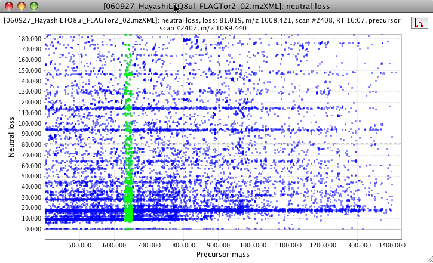

This plot shows the neutral loss calculated from all MS2... MSn in the selected raw data file. The user can define the number of most intense fragments to use in the calculation of the neutral loss. If a recurrent neutral loss occurs, a line pattern in the plot can be observed.
This plot is using the third part library JfreeChart for its basic functionality. To zoom in, drag the mouse from left to right, selecting the area to zoom. To zoom out drag the zoom from right to left.
The user can highlight spots in a range of m/z. This range can be for neutral loss or for the parent ion mass. This option appears in a submenu by making right click on the plot area.
